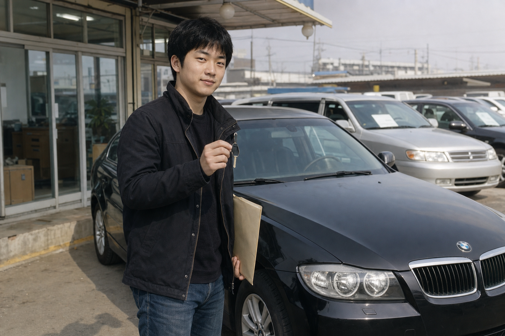

ep.011 BMW를 학교에 세우는 법
수지 외곽의 중고차 매매단지는 평일 오전이라 조용했다.
넓은 아스팔트 위에 차들만 줄지어 서 있었다. 햇빛은 보닛마다 얇게 미끄러졌고, 유리창에는 하늘보다 매장 깃발이 더 많이 비쳤다. 김용식은 그 사이를 천천히 걸어 검은색 BMW 320i 앞에서 멈췄다.
낮은 차체.
긴 보닛.
문을 열기도 전에 묻어나는 낯선 가죽 냄새.
그는 손끝으로 차 키가 들어갈 자리를 한 번 상상했다. 평택대학교 주차장에 이 차를 세워두는 장면이 먼저 떠올랐다. 새내기가 외제차 문을 열고 내리면 누군가는 욕할 것이고, 누군가는 부러워할 것이고, 누군가는 그날 저녁 술자리에서 이름도 모르는 김용식을 안주처럼 씹을 것이다.
그리고 김초연은 분명히 이렇게 말할 것이다.
`너 뭐야?`
그 목소리가 머릿속에서 너무 또렷해서, 용식은 자기도 모르게 입가를 만졌다.
[딜러] "학생이라고 하셨죠? 이거는 좀 부담되실 텐데요."
[김용식] "부담되면 안 사죠."
말이 먼저 나갔다.
딜러는 잠깐 눈을 깜빡였다. 용식은 그 짧은 침묵 사이에 자기 목소리가 얼마나 건방지게 들렸는지 알아차렸다. 돈을 쥔 스무 살에게 제일 먼저 튀어나오는 것은 신중함이 아니라 허세였다. 더 웃긴 건, 그걸 알면서도 물러서고 싶지 않다는 점이었다.
차량가 45,200,000원.
등록, 보험, 초기 비용까지 대충 52,000,000원.
2,215,634,741원에서 빠지면 2,163,634,741원.
계산은 이미 끝나 있었다. 계약서 위로 볼펜 끝이 내려갔고, 김용식은 자기 이름을 썼다. 종이 한 장에 이름을 적는 일뿐인데 손끝이 이상하게 뜨거웠다. 돈이 줄어드는 감각보다, 이제 정말 숨겨야 할 물건이 하나 더 생겼다는 감각이 먼저 왔다.
보험료가 비싸다는 설명이 이어졌다. 유지비도 만만치 않을 거라는 말이 붙었다. 딜러는 걱정하는 얼굴을 했고, 용식은 고개만 끄덕였다.
괜찮다는 말은 쉬웠다.
돈이 있으니까.
그런데 그 쉬운 말 안쪽에는, 아무에게도 말할 수 없는 숫자와 아무에게도 보여줄 수 없는 영수증들이 차곡차곡 쌓이고 있었다. 그래도 자동차 키를 손에 받는 순간, 차가운 금속이 손바닥에 닿자마자 그는 웃고 있었다.

집으로 바로 갈 수는 없었다.
김용식은 수지 집에서 걸어서 십오 분쯤 떨어진 오래된 상가 지하주차장으로 차를 몰았다. 입구는 좁았고, 천장 배관은 낮았다. 지하로 내려갈수록 라디오 소리가 먹먹해졌고, 콘크리트 벽에는 오래된 습기 냄새가 배어 있었다.
그는 가장 안쪽 기둥 옆에 차를 세웠다.
차 문을 닫는 소리가 생각보다 크게 울렸다.
[관리인] "학생 차야?"
[김용식] "친척 차요. 제가 좀 맡아둬서요."
[관리인] "요즘 친척 좋네."
관리인은 더 묻지 않았다. 용식은 자연스럽게 웃었고, 그 자연스러움이 더 이상했다. 거짓말은 처음만 어렵지 않았다. 한 번 입 밖으로 나가면, 그다음부터는 표정이 알아서 따라붙었다.
그날 저녁, 어머니는 반찬가게에서 남은 잡채를 데워 줬다.
식탁 위에는 김이 천천히 올라왔다. 참기름 냄새가 방 안에 퍼졌고, 어머니는 앞치마를 벗지도 않은 채 그의 밥그릇 옆에 김치를 밀어 놓았다. 용식은 젓가락을 들었다가, 지하주차장 안쪽에 세워둔 검은 차를 떠올렸다.
[어머니] "입학하고 힘들지?"
[김용식] "아직은 괜찮아."
[어머니] "돈 많이 쓰지 말고."
젓가락이 멈췄다.
잡채 면발 하나가 젓가락 끝에서 천천히 흘러내렸다. 어머니는 아무것도 모르는 얼굴로 물컵을 자기 쪽으로 당겼고, 용식은 그 얼굴을 보지 못한 척 밥을 삼켰다.
[김용식] "응."
잡채는 달았다.
숨겨 놓은 돈은 달지 않았다.
다음 날 아침, 그는 평소처럼 집을 나섰다.
현관문이 닫히는 소리를 듣고도 바로 버스 정류장으로 가지 않았다. 골목 끝까지 걸어간 뒤, 뒤를 한 번 돌아보고 상가 쪽으로 방향을 틀었다. 책가방은 어깨에 걸려 있었고, 그 안에는 전공책보다 자동차 키의 존재감이 더 컸다.
지하주차장은 아침에도 어두웠다. 형광등 몇 개가 깜빡였고, 어제보다 차가 더 검게 보였다. 용식은 운전석에 앉아 문을 닫았다. 바깥소리가 줄어들었다.
엔진이 걸렸다.
2008년의 도로가 앞유리에 들어왔다.
수지에서 평택까지는 생각보다 길었다. 버스로 갈 때는 늘 같은 피곤함으로 뭉개지던 길이, 차 안에서는 이상하게 또렷했다. 라디오에서는 오래된 가요가 흘렀고, 도로 옆 간판들은 아직 촌스럽게 큼직했다. 김용식은 속도를 과하게 올리지 않았다. 돈은 있어도 사고 나면 끝이었다.
그는 앞으로도 계속 계산해야 했다.
차량가.
보험료.
주유비.
주차비.
그리고 이 차를 본 사람들이 만들 소문까지.
평택대학교 정문이 보였을 때, 김용식은 일부러 속도를 늦췄다. 학생들이 가장 많이 지나가는 시간이었다. 등교하는 애들이 정문 앞에서 흩어지고, 카페테리아 쪽 계단에는 아직 잠이 덜 깬 얼굴들이 모여 있었다.
숨길 마음은 없었다.
학교에서는.
주차장 한쪽에 차를 세우자마자 시선이 붙었다. 남학생 둘이 걸음을 늦췄고, 여학생 하나가 친구 팔을 잡았다. 시선들은 유리창에 한 번, 번호판에 한 번, 운전석 문에 한 번씩 닿았다.
[남학생] "야, 저거 BMW 아니냐?"
[다른 남학생] "새내기가?"
문을 열고 내리는 순간, 김용식은 알았다.
이건 통학 수단이 아니다.
폭죽이다.
차 문이 닫혔다. 그 소리가 주차장 한쪽으로 짧게 번졌다. 용식은 가방끈을 고쳐 잡고 카페테리아 쪽으로 걸었다. 굳이 빠르게 걷지 않았다. 빠르게 걸면 숨는 사람처럼 보였다.
계단 앞에서 김초연이 멈춰 섰다.
검은 긴 머리. 작은 크로스백. 손에는 아직 뜯지 않은 삼각김밥. 그녀는 차를 봤다가, 다시 김용식을 봤다. 표정은 거의 움직이지 않았는데 눈만 조금 바빴다.
[김초연] "너 뭐야?"
머릿속에서 미리 들었던 말과 똑같았다.
[김용식] "통학."
[김초연] "통학을 왜 저걸로 해?"
[김용식] "버스가 불편해서."
김초연은 삼각김밥을 쥔 손에 힘을 줬다. 포장 비닐이 작게 구겨졌다. 주변에 있던 몇 명이 듣는 척하지 않으며 듣고 있었다. 용식은 친척 차라고 둘러대야 한다는 걸 알고 있었다. 어제 지하주차장에서 했던 말처럼, 적당히 납작하고 설명하기 쉬운 거짓말을 골라야 했다.
그런데 입은 다른 쪽으로 갔다.
[김초연] "버스가 불편하면 다들 BMW 타냐?"
[김용식] "나는 타."
김초연의 눈이 가늘어졌다.
[김초연] "와. 재수 없어."
말은 그렇게 나왔는데, 입꼬리가 아주 조금 올라갔다.
그 작은 변화가 문제였다. 차 값보다, 보험료보다, 지하주차장 한 달치보다 그게 먼저 박혔다. 용식은 김초연이 자기 말에 완전히 밀어내지 않았다는 사실을 알아차렸고, 알아차린 순간 이미 한 발 더 들어가고 있었다.
[김초연] "왜 그렇게 봐?"
[김용식] "귀여워서."
김초연은 바로 대답하지 않았다. 삼각김밥으로 그의 팔을 한 번 툭 쳤다. 세게 때린 것도 아닌데, 비닐 끝이 팔꿈치 아래를 스치고 지나간 자리가 이상하게 남았다.
[김초연] "미쳤냐?"
귀 끝이 조금 빨갰다.
김용식은 그 색을 봤다. 그러고는, 52,000,000원이 덜 아깝다고 생각했다. 정확히 말하면 그런 생각을 하는 자기 자신이 좀 위험하다고 느꼈다.
점심 무렵, 폴더폰이 울렸다.
강의실 앞 복도는 점심을 먹으러 나가는 학생들로 복잡했다. 김용식은 벽 쪽으로 비켜서서 폴더폰을 열었다. 화면에는 김종규 이름이 떠 있었다.
문자를 다 읽기도 전에 하나 더 왔다.
소문은 벌써 차보다 빨랐다.
김초연은 옆에서 화면을 힐끗 봤다. 너무 가까이 보지는 않았다. 그렇다고 안 본 것도 아니었다. 그녀는 삼각김밥 포장지를 반듯하게 접어 손바닥 안에 넣었다.
[김초연] "나도."
[김용식] "뭘?"
[김초연] "태워 달라고."
용식은 폴더폰을 닫았다. 플라스틱이 맞물리는 소리가 손바닥 안에서 났다.
[김용식] "어디까지?"
김초연은 바로 대답하지 않았다. 복도 끝 창문으로 들어온 봄빛이 그녀의 옆얼굴을 지나갔다. 별것 아닌 침묵인데, 그 사이에 PC방 의자 두 개와 학교 주차장과 수지로 가는 도로가 한꺼번에 멀어졌다.
[김초연] "수원."
말은 가벼웠지만 가볍지 않았다.
수원까지 데려다주는 사이.
그건 PC방에서 한 판 더 하는 사이보다 훨씬 멀리 가는 말이었다. 목적지가 생기면 길도 생기고, 길이 생기면 차 안에 둘만 남는 시간이 생긴다. 김용식은 그 시간을 너무 빨리 상상했다.
[김용식] "오늘?"
[김초연] "왜, BMW는 수원 못 가?"
김용식은 자동차 키를 손안에서 굴렸다. 금속 모서리가 손바닥을 눌렀다.
[김용식] "가."
김초연은 그제야 고개를 끄덕였다.
[김초연] "그럼 끝나고 튀지 마."
튀지 말라.
그 말이 이상하게 좋았다. 누군가가 자기를 붙잡는 말처럼 들렸고, 동시에 앞으로 숨겨야 할 말이 하나 더 늘어나는 소리처럼도 들렸다.
김용식은 아직 몰랐다.
차는 사람을 태우지만, 소문도 같이 태운다는 걸.